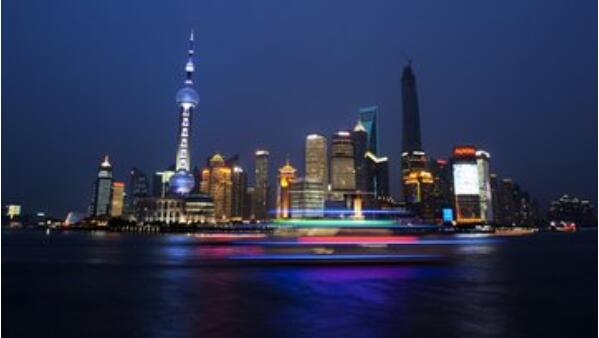
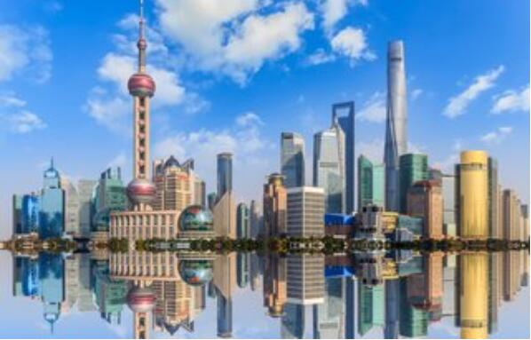
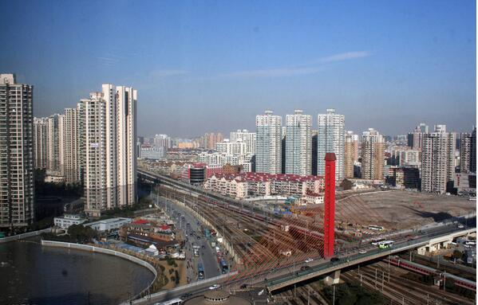
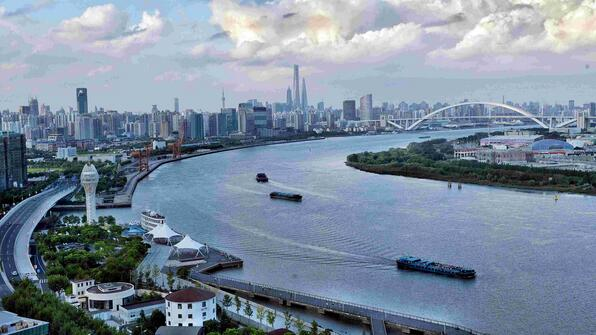

morly旅游圈
上海，简称“沪”或“申”，是中国共产党的诞生地。中华人民共和国直辖市，国家中心城市，超大城市，中国的经济、交通、科技、工业、金融、贸易、会展和航运中心，首批沿海开放城市。 上海地处长江入海口，是长江经济带的龙头城市，隔东中国海与日本九州岛相望，南濒杭州湾，北、西与江苏、浙江两省相接。 上海是一座国家历史文化名城，拥有深厚的近代城市文化底蕴和众多历史古迹。江南传统吴越文化与西方传入的工业文化相融合形成上海特有的海派文化， 上海人多属江浙民系使用吴语。早在宋代就有了“上海”之名，1843年后上海成为对外开放的商埠并迅速发展成为远东第一大城市，今日的上海已经成功举办了2010年世界博览会、中国上海国际艺术节、上海国际电影节等大型国际活动。
上海辖16个市辖区，总面积6340平方公里，属亚热带湿润季风气候，四季分明，日照充分，雨量充沛。上海气候温和湿润，春秋较短，冬暖夏凉。1月份最冷，平均气温约4℃，通常7月份最热，平均气温约28℃。 上海是中国重要的的经济、交通、科技、工业、金融、会展和航运中心，是世界上规模和面积最大的都会区之一。上海港货物吞吐量和集装箱吞吐量均居世界第一，是一个良好的滨江滨海国际性港口。上海也是中国大陆首个自贸区“中国（上海）自由贸易试验区”所在地。上海与江苏、浙江、安徽共同构成的长江三角洲城市群已成为国际6大世界级城市群之一。
今年秋季去哪里赏花？其实足不出沪，便可以欣赏到在自然界难得一见的花海，小编在此为你推荐几个上海赏花的好去处，和家人一起赏花去吧！
滨江森林公园
随着秋天脚步的到来，上海滨江森林公园“2014上海秋季花展”的展示区域迎来了繁花似锦，姹紫嫣红的热闹场面。不论是提前盛开的百日草，还是花色鲜艳夺目的硫磺菊，亦或是姗姗来迟的波斯菊，都展现了朝气蓬勃，花团锦簇的样子。花展期间，园方还将安排大量配套节目，令游人在赏花的同时吃烧烤、摘柑橘、放风筝，充分享受郊野森林公园的自然之趣。
为使游客近距离体验“五彩森林”的自然之美，滨江森林公园在保留花展展区原有的石板小道、鹅卵石小道的基础上，根据地势及周围环境，增设了草坪(门票)小径，便于游客置身花海，零距离欣赏美景。这样的“赏花小道”遍及了公园整个花展区域。在“赏花小道”或左或右的带领下，游客们仿若置身花海，感受被花海簇拥的惬意，又怎知不是另一个“桃花源(门票)”呢？
【地点】浦东新区高桥镇凌桥高沙滩3号
【门票】20元
共青森林公园
在森林花海板块，共青森林公园在园内大面籽播百日草、硫华菊、波斯菊等花卉，形成色彩斑斓的巨大花海，让春天的美景，为金秋增添色彩，以森林为背景的大片花海将绿色森林点缀得妩媚多彩，结合丘陵、湖泊、密林等多种森林元素，营造出一种自然、清新的郊野环境。让市民游客沐浴在森林花海中，赏花看景，感受生态野趣，绿色自然的生活。
共青森林公园是市区种植彩叶树最多的公园，是市区秋景最美的公园，12月初将呈现层林尽染，叠翠流金、山野秋色尽在眼前的美景，各种各样的树种，青、黄、红、紫，让游客体验秋天之美。
【地址】上海市东北部杨浦区军工路2000号
【门票】15元
上海植物园
尽管秋季花展已经结束，但是园内的菊花依然美丽。尤其是像百日草+波斯菊组合，硫华菊+百日草等的多种组合方式，使得园内景观精彩多样，引人入胜。
【地址】徐汇区龙吴路997号
【门票】联票40元
世纪公园(门票)
这是上海内环之内最大的公园。环境很嗲，空气清新。租一辆自行车，既能休闲娱乐，又能欣赏沿途优美的景色。大片的草坪上坐着其乐融融的一家人，碧波荡漾的湖水泛着小船，儿童乐园里洋溢着孩子的欢笑声，赏心悦目的花草树木留住很多拍客的脚步。这里有好几片大草坪，都是搭帐篷休闲家庭，7号门的一角，有时还能看到办露天婚礼的新人，沿着湖边有湿地，芦苇和鹅卵石，还可在水边捞小鱼。
【地址】上海市浦东新区锦绣路1001号
【门票】10元
辰山植物园
从1号门进入先去了矿坑花园，走上几十级台阶登山辰山，周围的景色尽收眼底，之后进入岩洞观赏瀑布，最后去了温室展览馆，规模蛮大的，植物很多，整个行程5小时，觉得挺长知识的，植物园环境很好，厕所也干净。
【地址】上海市松江区辰花公路3888号
【门票】60元
内容整理至网络，如有侵权，请联系我们！1255394075@qq.com
 